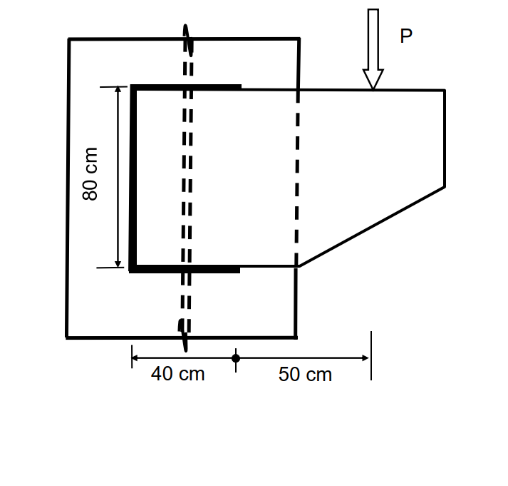
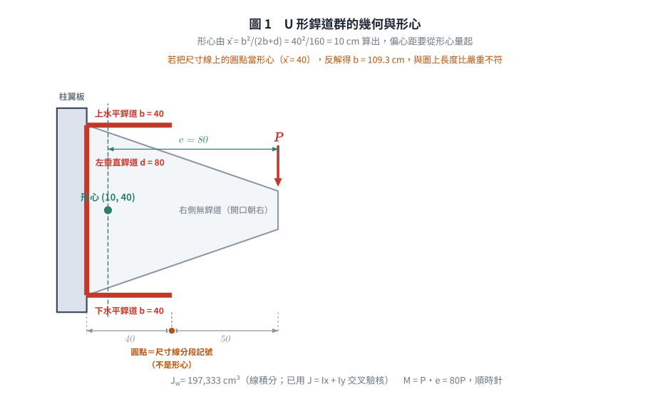
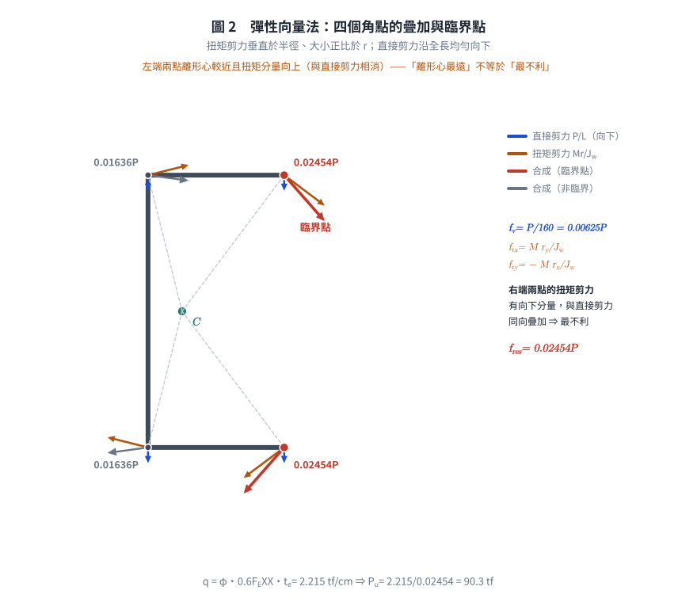
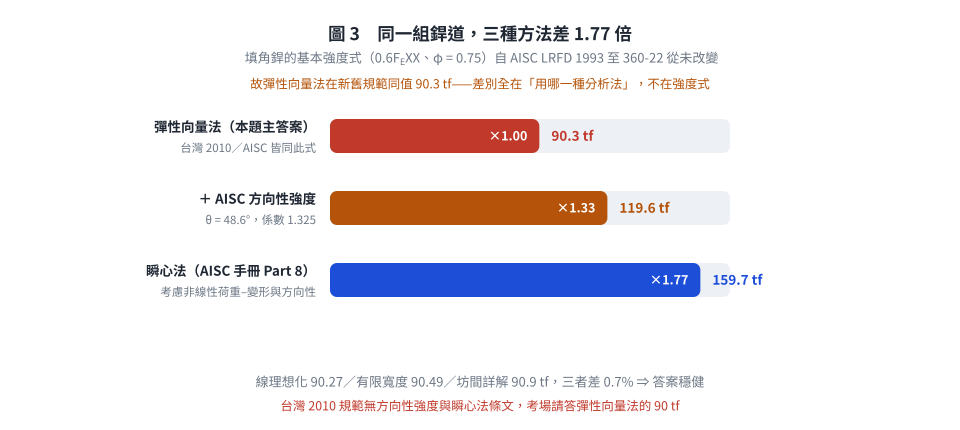

考題編號：SS-2017-4
主分類： SS-U1-4 接合之分析與設計
副分類： 無
設計法： LRFD
標籤： 填角銲 偏心銲縫 托架接合 銲道群形心 扭矩分析 E70XX 彈性向量法 Jw極慣性矩 方向性強度 瞬心法
1. 原始題目重述 (Problem Restatement)
一銲接於鋼柱托架承受 $P$ 之集中載重，採用 E70XX 銲條，填角銲之有效喉厚為 10 mm，銲道長度如下圖，上、下水平銲道長度相同。請依極限設計法（LRFD）檢核該銲道可承受之最大集中載重 $P_u$。（30 分）
$$\phi = 0.75,\quad \phi \cdot 0.6F_{EXX} \text{（銲縫標稱強度）},\quad \text{不須考慮載重係數}$$
銲道幾何（由圖判讀）：
P（垂直向下）
↓
─────┬─────────────────────────
柱翼板│ ← 銲道（U形，開口朝右） bracket plate
│════════════════════╗ ← 上水平銲道 40 cm
║ ║
║ 80 cm ║
左垂直║ （銲道高度） ║（bracket 無右側銲道）
║ ║
║════════════════════╝ ← 下水平銲道 40 cm
│
─────┴─────────────────────────
40 cm 50 cm
←bracket→←—e'—→
銲道群組成：
- 左垂直銲道：$d = 80$ cm
- 上水平銲道：$b = 40$ cm
- 下水平銲道：$b = 40$ cm（與上相同）
- 右側無銲道（U形缺口）
載重位置：
$P$ 施加於托架板右端，距柱翼板（銲道左端）之水平距離：$b + e' = 40 + 50 = 90$ cm
🔍 圖面判讀依據（2026-08-22 重新以 500 dpi 影像檢視原始試卷確認）
試卷下方尺寸線由左至右為「40 cm ─ ● ─ 50 cm」，右端界線與 $P$ 之空心箭頭同一鉛垂線。三項判讀理由：
1. 左界線 = 左垂直銲道（與 80 cm 尺寸線之上下端對齊），故 40 cm 自柱面量起。
2. 中間圓點為尺寸線分段記號，不是銲道群形心。若圓點為形心，則需 $b^2/(2b+d) = 40$，解得 $b = 109.3$ cm，與圖上水平／垂直銲道長度比（約 0.5）嚴重不符。
3. 圖面比例交叉驗核：垂直銲道 680 px ↔ 80 cm（8.5 px/cm）；水平銲道 405 px ↔ 約 42 cm，與 40 cm 相符。結論：$b = 40$ cm（上下水平銲道各一，題目已明示「上、下水平銲道長度相同」），$P$ 距柱面 $40 + 50 = 90$ cm。

圖說：柱翼板（左側大矩形，虛線表示柱輪廓）與梯形托架板（右側）之銲接接合平面圖。U 形銲道（粗黑線）由三段組成：左垂直銲道（高 80 cm）、上水平銲道（長 40 cm）、下水平銲道（長 40 cm），右側無銲道（開口朝右）。托架板右緣承受垂直向下集中載重 $P$（空心箭頭），載重作用點距柱翼板面水平距離 = 40 cm（銲道長度）+ 50 cm（托架板懸挑）= 90 cm。虛線直線為柱翼板中心線及托架板的參考線。銲道群形心計算：$\bar{x} = 40^2/(2\times40+80) = 10\text{ cm}$（距柱面），$\bar{y} = 40\text{ cm}$（距銲道底端），偏心距 $e = 90 - 10 = 80\text{ cm}$。
📊 互動圖請參閱：
SS-2017-4-connection-viz.html

圖 1 銲道群幾何與形心。$\bar{x} = b^2/(2b+d) = 10$ cm 是算出來的，偏心距必須從形心量起；這張圖攔的是把尺寸線上的圓點當成形心（若真如此則反解得 $b = 109.3$ cm，與圖上長度比嚴重不符）。
2. 考題核心精神與出題者意圖 (Core Concepts & Examiner's Intent)
核心觀念：偏心銲縫群的彈性向量法（Elastic Vector Method）
此題考查偏心荷載下銲縫群的分析——P 在銲道群形心的右方，產生扭轉力矩，使各處銲道受到「直接剪力」與「扭矩剪力」的疊加。關鍵是找到臨界點（合成應力最大的銲道位置）並設定強度條件。
出題者測驗重點：
- 正確計算 U 形銲道群的形心位置（$\bar{x}$、$\bar{y}$）
- 正確計算銲道群的極慣性矩 $J_w$（對形心的二次矩總和）
- 辨別臨界點（右端上下水平銲道端部，距形心最遠且方向最不利）
- 向量疊加：直接剪力（均勻向下）+ 扭矩剪力（垂直於 $r$ 方向）
3. 解題戰略地圖與陷阱分析 (Strategic Roadmap & Trap Analysis)
作戰步驟：
1. 確認銲道幾何（三段線段）
2. 求形心 $\bar{x}$、$\bar{y}$（對銲道群）
3. 求極慣性矩 $J_w$（各段對形心的 $\int r^2 \, dL$）
4. 計算偏心矩 $M = P \cdot e$（$e$ = P 到形心的水平距離）
5. 找臨界點，計算直接剪力 + 扭矩剪力分量
6. 合成最大剪力 = 銲道容許強度 → 求 $P_u$
關鍵陷阱：
⚠️ 陷阱1：形心位置計算錯誤（取距離柱面的距離）
U 形銲道的形心不在左端（$\bar{x} \neq 0$），而是向右偏移 $\bar{x} = b^2/(2b+d)$，忽略此偏移會導致偏心距計算錯誤。⚠️ 陷阱2：扭矩方向判斷錯誤
$P$（向下）作用於形心右方 → 對形心產生順時針（CW）力矩。各點扭矩剪力方向需依 CW 方向推導。⚠️ 陷阱3：臨界點不在直覺位置
不是「距形心最遠的角點」就是臨界點——必須同時考慮扭矩剪力方向與直接剪力方向的向量和。右端水平銲道的扭矩剪力有朝下分量，與直接剪力同向，最危險。⚠️ 陷阱4：喉厚單位
有效喉厚 $t_e = 10$ mm $= 1$ cm，代入時需與銲道長度單位（cm）一致。
3.5 變數層次分析（Variable Hierarchy Analysis）
複習提示：解題後，在每個卡住的知識點「卡關?」欄標記
⚠；第二次複習時只看有⚠的項目。
最終目標： 求 U 形銲道群的形心與極慣性矩 $J_w$ → 計算偏心矩 → 彈性向量法疊加直接剪力與扭矩剪力 → 由臨界點強度條件反求最大 $P_u$
主要公式（$\boxed{\phantom{x}}$ = 未知，待推導）
$$\boxed{\bar{x}} = \frac{b^2}{2b+d} = \frac{40^2}{2\times40+80} = 10\text{ cm},\quad \bar{y} = 40\text{ cm}$$
$$\boxed{J_w} = \sum_i \int r^2\,dL = 197{,}333\text{ cm}^3,\quad e = 90 - \bar{x} = 80\text{ cm}$$
$$f_{\text{res}} = \sqrt{f_{tx}^2 + (f_v + f_{ty})^2} = 0.02454\,P \leq \phi\cdot0.6F_{EXX}\cdot t_e$$
$$\boxed{P_u} = \frac{2.215}{0.02454} \approx 90.3\text{ tf}$$
L1：題目直接給定
| 符號 | 數值 | 說明 |
|---|---|---|
| 銲道形狀 | U 形（左垂直 + 上下水平） | 開口朝右 |
| 垂直銲道長 | $d = 80$ cm | |
| 水平銲道長 | $b = 40$ cm（上下各一） | |
| 有效喉厚 | $t_e = 10$ mm $= 1$ cm | |
| 銲條等級 | E70XX | $F_{EXX} = 70$ ksi $= 4.922$ tf/cm² |
| 載重偏心距 | 距柱翼板面 $40 + 50 = 90$ cm | |
| $\phi$ | 0.75 | 銲道強度折減係數 |
L2：需知識點推導
Step 1：計算銲道群形心
| 符號 | 公式 / 來源 | 卡關? |
|---|---|---|
| $L_{\text{total}}$ | $40 + 80 + 40 = 160$ cm | |
| $\bar{x}$ | $\frac{40\times20 + 80\times0 + 40\times20}{160} = 10$ cm（U形速算：$b^2/(2b+d)$） | |
| $\bar{y}$ | $\frac{40\times0 + 80\times40 + 40\times80}{160} = 40$ cm（對稱，為銲道中高） |
Step 2：計算極慣性矩 $J_w$
| 符號 | 公式 / 來源 | 卡關? |
|---|---|---|
| $I_{w1}$（下水平） | $\int_0^{40}[(x-10)^2 + (0-40)^2]dx = 73{,}333$ cm³ | |
| $I_{w2}$（左垂直） | $\int_0^{80}[(0-10)^2 + (y-40)^2]dy = 50{,}667$ cm³ | |
| $I_{w3}$（上水平） | 與 $I_{w1}$ 相同 $= 73{,}333$ cm³（對稱） | |
| $J_w$ | $73{,}333 + 50{,}667 + 73{,}333 = 197{,}333$ cm³ |
Step 3：偏心矩與直接剪力
| 符號 | 公式 / 來源 | 卡關? |
|---|---|---|
| 偏心距 $e$ | $x_P - \bar{x} = 90 - 10 = 80$ cm | |
| 力矩 $M$ | $80P$（tf·cm，CW 順時針） | |
| $f_v^{\text{direct}}$ | $P/160$（均勻，垂直向下） |
Step 4：臨界點彈性向量法
| 符號 | 公式 / 來源 | 卡關? |
|---|---|---|
| 臨界點 | 右端上/下水平銲道端部（$r_x=30,\;r_y=\pm40$） | |
| $f_{tx}$ | $M r_y / J_w = 80P\times40/197{,}333 = 0.01621P$（水平） | |
| $f_{ty}$ | $-M r_x / J_w = -80P\times30/197{,}333 = -0.01216P$（向下） | |
| $f_y^{\text{total}}$ | $-P/160 - 0.01216P = -0.01841P$ | |
| $f_{\text{res}}$ | $P\sqrt{0.01621^2 + 0.01841^2} = 0.02454P$ |
Step 5：由強度條件求 $P_u$
| 符號 | 公式 / 來源 | 卡關? |
|---|---|---|
| 銲道單位強度 $q$ | $\phi\times0.6F_{EXX}\times t_e = 0.75\times0.6\times4.922\times1.0 = 2.215$ tf/cm | |
| $P_u$ | $2.215 / 0.02454 = 90.3$ tf |
L3：深層知識（不懂就卡住）
| 知識點 | 說明 | 補強頁 | 卡關? |
|---|---|---|---|
| 偏心銲道彈性向量法 | 直接剪力均勻分佈 + 扭矩剪力垂直半徑 $r$；向量疊加求合成 | [[eccentric-weld]] | |
| U 形形心偏移 | $\bar{x} \neq 0$（向右偏 $b^2/(2b+d)$）；偏心距需從形心量，非從銲道邊量 | [[eccentric-weld]] | |
| $J_w$ 是線積分非面積分 | 銲道是線段（cm³），非截面（cm⁴）；每段對形心的 $\int r^2 dL$ | ||
| CW 扭矩的分量符號 | CW 旋轉：$f_{tx} = +Mr_y/J_w$，$f_{ty} = -Mr_x/J_w$；方向不可混淆 | ||
| 臨界點的辨別邏輯 | 不只看距形心最遠，須確認扭矩剪力與直接剪力是否同向疊加 | [[eccentric-weld]] | |
| E70XX 強度換算 | 70 ksi × 0.07031 = 4.922 tf/cm²；台灣考試常考單位換算 |
4. 步驟化詳細計算過程 (Step-by-Step Detailed Calculation)
Step 1：確認銲道群幾何
取座標原點於銲道群左下角（左垂直銲道底端）：
| 段 | 路徑 | 長度 |
|---|---|---|
| ① 下水平銲道 | $x: 0 \to 40$，$y = 0$ | $L_1 = 40$ cm |
| ② 左垂直銲道 | $x = 0$，$y: 0 \to 80$ | $L_2 = 80$ cm |
| ③ 上水平銲道 | $x: 0 \to 40$，$y = 80$ | $L_3 = 40$ cm |
$$L_{\text{total}} = 40 + 80 + 40 = 160 \text{ cm}$$
Step 2：求銲道群形心 $(\bar{x},\,\bar{y})$
$$\bar{x} = \frac{\sum L_i \bar{x}i}{L$$}}} = \frac{40 \times 20 + 80 \times 0 + 40 \times 20}{160} = \frac{800 + 0 + 800}{160} = \frac{1600}{160} = 10 \text{ cm
$$\bar{y} = \frac{40 \times 0 + 80 \times 40 + 40 \times 80}{160} = \frac{0 + 3200 + 3200}{160} = \frac{6400}{160} = 40 \text{ cm}$$
$$\boxed{\text{形心 } C = (10,\;40) \text{ cm，自左下角量起}}$$
Step 3：計算極慣性矩 $J_w$
對形心 $C = (10, 40)$，各段對形心的積分 $\int r^2\, dL = \int [(x-\bar{x})^2 + (y-\bar{y})^2]\, dL$：
① 下水平銲道（$y=0$，$x: 0\to40$，令 $u = x-10$，$u: -10\to30$）：
$$I_{w1} = \int_0^{40}\left[(x-10)^2 + (0-40)^2\right]dx$$
$$= \left[\frac{(x-10)^3}{3}\right]_0^{40} + 1600 \times 40$$
$$= \frac{30^3 - (-10)^3}{3} + 64{,}000 = \frac{27{,}000 + 1{,}000}{3} + 64{,}000 = 9{,}333 + 64{,}000 = 73{,}333 \text{ cm}^3$$
② 左垂直銲道（$x=0$，$y: 0\to80$，令 $v = y-40$，$v: -40\to40$）：
$$I_{w2} = \int_0^{80}\left[(0-10)^2 + (y-40)^2\right]dy$$
$$= 100 \times 80 + \left[\frac{(y-40)^3}{3}\right]_0^{80}$$
$$= 8{,}000 + \frac{40^3 - (-40)^3}{3} = 8{,}000 + \frac{2 \times 64{,}000}{3} = 8{,}000 + 42{,}667 = 50{,}667 \text{ cm}^3$$
③ 上水平銲道（$y=80$）：與①積分形式完全相同：
$$I_{w3} = 73{,}333 \text{ cm}^3$$
銲道群極慣性矩：
$$J_w = I_{w1} + I_{w2} + I_{w3} = 73{,}333 + 50{,}667 + 73{,}333 = \boxed{197{,}333 \text{ cm}^3}$$
Step 4：偏心矩與直接剪力
P 的位置（以左下角為原點）： $x_P = 40 + 50 = 90$ cm，高度取形心高 $y_P = 40$ cm（P 垂直作用，水平臂才影響力矩）
偏心矩（對形心 $C$ 的力矩）：
$$M = P \cdot e = P \times (x_P - \bar{x}) = P \times (90 - 10) = 80P \quad \text{（tf·cm，CW 順時針）}$$
直接剪力（均勻分佈於全銲道）：
$$f_v^{\text{direct}} = \frac{P}{L_{\text{total}}} = \frac{P}{160} \quad \text{（tf/cm，垂直向下）}$$
Step 5：臨界點分析（彈性向量法）
對銲道群上任意點 $(r_x, r_y)$（從形心量起），扭矩剪力分量為（CW 旋轉）：
$$f_{tx} = \frac{M \cdot r_y}{J_w}, \qquad f_{ty} = -\frac{M \cdot r_x}{J_w}$$
合成剪力：
$$f_{\text{res}} = \sqrt{\left(f_{tx}\right)^2 + \left(f_v^{\text{direct}} + f_{ty}\right)^2}$$
檢核各角點：
| 位置 | $(r_x,\;r_y)$ | $f_{tx}/P$ | $f_{ty}/P$ | $f_v/P$ | $f_{\text{res}}/P$ |
|---|---|---|---|---|---|
| 上水平右端 | $(30,\;40)$ | $+0.01621$ | $-0.01216$ | $-0.00625$ | 0.02454 |
| 下水平右端 | $(30,\;-40)$ | $-0.01621$ | $-0.01216$ | $-0.00625$ | 0.02454 |
| 上水平左端 | $(-10,\;40)$ | $+0.01621$ | $+0.00406$ | $-0.00625$ | 0.01636 |
| 下水平左端 | $(-10,\;-40)$ | $-0.01621$ | $+0.00406$ | $-0.00625$ | 0.01636 |
| 垂直銲道頂端 | $(-10,\;40)$ | $+0.01621$ | $+0.00406$ | $-0.00625$ | 0.01636 |
臨界點為上水平銲道右端及下水平銲道右端，應力相等。
以上水平右端 $(r_x=30,\;r_y=40)$ 詳算：
$$f_{tx} = \frac{80P \times 40}{197{,}333} = \frac{3{,}200P}{197{,}333} = 0.01621P \quad \text{（向右）}$$
$$f_{ty} = -\frac{80P \times 30}{197{,}333} = -\frac{2{,}400P}{197{,}333} = -0.01216P \quad \text{（向下）}$$
$$f_y^{\text{total}} = -0.00625P - 0.01216P = -0.01841P \quad \text{（向下）}$$
$$f_{\text{res}} = P\sqrt{0.01621^2 + 0.01841^2} = P\sqrt{0.000263 + 0.000339} = P\sqrt{0.000602} = 0.02454P$$

圖 2 彈性向量法的疊加。右端兩點的扭矩剪力有向下分量、與直接剪力同向相加；左端兩點則相消——這張圖攔的是「離形心最遠就是臨界點」這個直覺，臨界點必須看向量和而不是看距離。
Step 6：求最大荷載 $P_u$
E70XX 銲道標稱強度：
$$F_{EXX} = 70 \text{ ksi} \times 0.07031 \text{ tf/cm}^2\text{/ksi} = 4.922 \text{ tf/cm}^2$$
銲道容許強度（每 cm 銲道長度）：
$$q_{\text{allow}} = \phi \cdot 0.6 F_{EXX} \cdot t_e = 0.75 \times 0.6 \times 4.922 \times 1.0 = \boxed{2.215 \text{ tf/cm}}$$
強度條件：
$$f_{\text{res}} \leq q_{\text{allow}} \quad \Rightarrow \quad 0.02454 \cdot P_u = 2.215$$
$$\boxed{P_u = \frac{2.215}{0.02454} \approx 90.3 \text{ tf}}$$
5. 關鍵爭議點與進階探討 (Critical Issues & Advanced Discussion)
公式整理（彈性向量法速查）
| 步驟 | 公式 |
|---|---|
| 形心 $\bar{x}$ | $\dfrac{\sum L_i \bar{x}_i}{\sum L_i}$，U形：$\bar{x} = \dfrac{b^2}{2b+d}$ |
| 極慣性矩 $J_w$ | $\displaystyle\sum_i \int_{\text{segment}_i} r^2 \, dL$（線積分，非面積分） |
| 直接剪力 | $f_v = V/L_{\text{total}}$（均勻，方向與 V 相同） |
| 扭矩剪力 | $f_t = Mr/J_w$（垂直於半徑 $r$，依旋轉方向） |
| 分量（CW） | $f_{tx} = Mr_y/J_w$，$f_{ty} = -Mr_x/J_w$ |
| 合成 | $f_{\text{res}} = \sqrt{f_x^2 + f_y^2} \leq \phi \cdot 0.6F_{EXX} \cdot t_e$ |
U 形銲道的形心位移速算公式
$$\bar{x} = \frac{b^2}{2b + d} = \frac{40^2}{2 \times 40 + 80} = \frac{1600}{160} = 10 \text{ cm}$$
此公式適用於對稱 U 形（上下水平銲道等長）。
交叉驗核一：銲道「線理想化」vs「有限寬度」
本解析採教科書標準做法，將銲道視為無寬度之線（$J_w$ 之單位為 cm³）。若改將銲道視為寬 $t_e = 1$ cm 之矩形帶：
| 項目 | 線理想化（本文） | 有限寬度 |
|---|---|---|
| $\bar{x}$ | 10.00 cm | $\dfrac{2(40)(20) + 80(0.5)}{160} = 10.25$ cm |
| $I_x$ | 170,667 | 170,673 |
| $I_y$ | 26,667 | 25,883 |
| $J$ | 197,333 | 196,557 |
| $e$ | 80.00 cm | 79.75 cm |
| $f_{\text{res}}$ | $0.024535P$ | $0.024476P$ |
| $P_u$ | 90.27 tf | 90.49 tf |
差異僅 0.24%。坊間詳解（高點建國 106 年鋼結構設計詳解）採有限寬度法並取 $F_{EXX} = 4.93$ tf/cm²，得 $P_u \approx 90.9$ tf——三種算法落在 90.3～90.9 tf，答案高度穩健。考場寫 $P_u \approx 90$ tf 即可。
交叉驗核二：$J_w$ 之兩條路徑
$$J_w = \sum_i \int r^2 dL \;=\; 73{,}333 + 50{,}667 + 73{,}333 = 197{,}333$$
$$J_w = I_x + I_y = \underbrace{\left[2(40)(40^2) + \tfrac{80^3}{12}\right]}{170{,}667} + \underbrace{\left[80(10^2) + 2\left(\tfrac{40^3}{12} + 40(20-10)^2\right)\right]}333 \;\checkmark$$}667} = 197{,

圖 3 三種分析法的強度差距。填角銲的基本強度式（$0.6F_{EXX}$、$\phi = 0.75$）新舊規範從未改變，故彈性向量法同值；這張圖攔的是以為「換新規範答案就會變」——真正變的是分析方法，不是強度式。
與瞬心法（AISC Table 8-4／8-8）的差異
AISC 手冊提供「瞬心法（Instantaneous Center Method）」，考慮銲道之非線性荷重—變形關係與方向性強度，比彈性向量法給出顯著更高（較不保守）的強度（量化結果見 §6）。考試若無特別說明，用彈性向量法為標準解法。
銲道有效喉厚 $t_e$ vs 銲腳尺寸 $w$
- 本題直接給定 $t_e = 10$ mm（有效喉厚）
- 若題目給的是銲腳尺寸 $w$：$t_e = 0.707w$（45° 填角銲）
考場安全答法
| 步驟 | 簡化重點 |
|---|---|
| 形心 | 先算 $\bar{x} = 10$ cm（U形速算公式）、$\bar{y} = 40$ cm（對稱） |
| $J_w$ | 分三段積分，上下水平段相同（各 73,333），垂直段 50,667；合計 197,333 cm³ |
| 偏心矩 | $e = 90 - 10 = 80$ cm，$M = 80P$ |
| 臨界點 | 右端上下水平銲道（各算一次即可，結果相同） |
| $P_u$ | $= q_{\text{allow}} / 0.02454 = 2.215 / 0.02454 \approx \mathbf{90 \text{ tf}}$ |
6. 依最新規範（AISC 360-16／-22）對照
本題主答案所依規範：內政部「鋼構造建築物鋼結構設計技術規範」民國 99 年（2010）修正版之鋼結構極限設計法第十章接合設計。題目已直接給定 $\phi = 0.75$ 與 $\phi \cdot 0.6F_{EXX}$，與 AISC 之基本式相同。以下對照 AISC 360-16／-22。
6.1 基本強度式：完全相同
| 項目 | 台灣 2010 極限設計法 | AISC 360-16 §J2.4 | AISC 360-22 §J2.4a |
|---|---|---|---|
| 填角銲標稱強度 | $F_w = 0.6F_{EXX}$ | $F_{nw} = 0.60F_{EXX}$ | $F_{nw} = 0.60F_{EXX}$ |
| 強度折減係數 | $\phi = 0.75$ | $\phi = 0.75$（$\Omega = 2.00$） | $\phi = 0.75$（$\Omega = 2.00$） |
| 有效面積 | $A_{we} = t_e \times L$ | 同 | 同 |
$$\Rightarrow \boxed{\text{以彈性向量法計算，AISC 360-16／-22 之答案與本文完全相同：} P_u = 90.3 \text{ tf}}$$
這是本題最重要的對照結論：填角銲的基本強度式自 AISC LRFD 1993 至 360-22 從未改變，故此類「給定 $\phi \cdot 0.6F_{EXX}$ 反求 $P_u$」的題型，新舊規範同值。
6.2 AISC 360 新增之「方向性強度」（Directional Strength）
台灣 2010 規範對填角銲一律取 $0.6F_{EXX}$，不論受力方向。AISC 360-05 起（沿用至 -22）允許提高橫向受力銲道之強度：
$$F_{nw} = 0.60F_{EXX}\left(1.00 + 0.50\sin^{1.5}\theta\right)$$
其中 $\theta$ = 受力方向與銲道軸線之夾角（$\theta = 0°$ 縱向剪、$\theta = 90°$ 橫向拉，係數 1.5）。
本題臨界點（上水平銲道右端）之合力分量為 $f_x = 0.01622P$（沿銲軸）、$f_y = 0.01841P$（垂直銲軸）：
$$\theta = \arctan\frac{0.01841}{0.01622} = 48.6°,\qquad 1.00 + 0.50\sin^{1.5}(48.6°) = 1.325$$
$$q_{\text{allow}} = 0.75 \times 0.6 \times 4.922 \times 1.325 \times 1.0 = 2.936 \text{ tf/cm} \;\Rightarrow\; P_u = \frac{2.936}{0.024535} = 119.6 \text{ tf}\;(+32.5\%)$$
⚠️ 重要限制：AISC 360-16 §J2.4(b) 僅允許在同時考慮變形相容性的分析中對銲道群逐元素套用方向性強度；上式僅為「量級示意」，嚴謹做法是下節之瞬心法。360-22 已將此拆為 §J2.4a（一般）／§J2.4b（方向性）／§J2.4c（銲道群），限制更明確。
6.3 瞬心法（Instantaneous Center Method）之量化差距
AISC 手冊 Part 8（Table 8-4／8-8）以瞬心法處理偏心銲道群，元素強度式為：
$$R_i = 0.60F_{EXX}\left(1.0 + 0.50\sin^{1.5}\theta\right)\left[p(1.9 - 0.9p)\right]^{0.3} A_{we,i}$$
$$\Delta_u = 1.087\,w\,(\theta+6)^{-0.65} \le 0.17w,\quad \Delta_m = 0.209\,w\,(\theta+2)^{-0.32},\quad p = \Delta_i/\Delta_m$$
本文自行對上式作數值求解（非查表；銲道離散為 3000 段／邊，等值銲腳 $w = t_e/0.707 = 1.414$ cm，瞬心依對稱性落在水平形心軸上）：
| 方法 | 名義強度 $P_n$ | 設計強度 $\phi P_n$ | 相對彈性向量法 |
|---|---|---|---|
| 彈性向量法（本文主答案） | 120.4 tf | 90.3 tf | 1.00 |
| 彈性向量法 + 方向性強度 | 159.5 tf | 119.6 tf | 1.32 |
| 瞬心法（數值解） | 212.9 tf | 159.7 tf | 1.77 |
求得瞬心位於銲道左緣外側 $x_{IC} = -4.07$ cm（形心在 $x = 10$ cm）。
數值解之自我驗證：將載重逐步移向形心（$e$ 由 110 cm 減至 5 cm），$P_n$ 單調由 159.5 tf 升至 557.7 tf，並趨近同心解析值 $0.6F_{EXX}t_e(1.5d + 2b) = 590.6$ tf（$e = 5$ cm 時達 94.4%）；且 $\Sigma F_x = 9\times10^{-15}$ tf（對稱性）。
⚠️ 此 159.7 tf 為本文自行數值求解之結果，供理解「彈性向量法保守程度」用；考場請答彈性向量法之 90 tf。台灣 2010 規範並無瞬心法條文。
6.4 AISC 360 另需之檢核（台灣 2010 規範亦有但常被忽略）
| 檢核項目 | AISC 360-16 條文 | 說明 |
|---|---|---|
| 母材強度 | §J4.2 | $\phi R_n = \phi(0.60F_y A_{gv})$ 或 $\phi(0.60F_u A_{nv})$；托架板與柱翼板之剪力降伏／斷裂 |
| 銲道最小尺寸 | §J2.2b 表 J2.4 | 依較厚板厚定最小銲腳（台灣表 10.2-4 相同） |
| 銲道最大有效喉厚 | §J2.2b | 沿板緣時 $w \le t$（$t < 6$ mm）或 $t - 2$ mm |
| 端部回銲 | §J2.2b | 本題 U 形銲道右端為自由端，需注意起弧／收弧品質 |
本題未給托架板與柱翼板厚度，母材檢核無法量化；作答時應敘明「另需檢核母材剪力強度」。
6.5 對照總表
| 項目 | 台灣 2010（本文主答案） | AISC 360-16／-22 |
|---|---|---|
| $0.6F_{EXX}$、$\phi = 0.75$ | ✓ | ✓（完全相同） |
| 方向性強度增益 | ✗ 無此條文 | ✓ $(1+0.5\sin^{1.5}\theta)$ |
| 瞬心法 | ✗ 無此條文 | ✓（手冊 Part 8） |
| 彈性向量法 $P_u$ | 90.3 tf | 90.3 tf（同值） |
| 考慮方向性／瞬心後 | — | 119.6 ～ 159.7 tf |
修正日期：2026-08-22
本次修正內容：①以 500 dpi 影像重新判讀試卷附圖，補入「40 cm 為水平銲道長度、圓點為尺寸線分段記號」之三項判讀依據（含形心反算反證）；②新增 $J_w$ 兩路徑交叉驗核與「線理想化 vs 有限寬度」對照（90.27／90.49 tf），並與坊間詳解 90.9 tf 比對；③新增 §6 依最新規範對照（含方向性強度與瞬心法之數值求解）。原 §4 各數值經獨立重算全部正確，主答案 $P_u = 90.3$ tf 不變。
驗證狀態：unverified